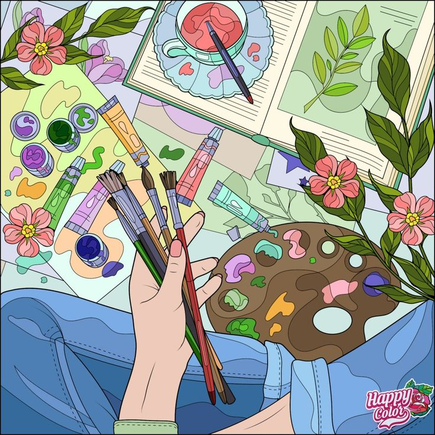

Hobbies
I used to feel like I needed to justify my hobbies by framing them as “relevant” to find the transferable skills and make them sound professional. I've stopped doing that. These are things I genuinely love. If they've also made me better at thinking in systems, sitting with a problem for longer than is comfortable, and noticing when something is off by one pixel — then that's a bonus, not the point. Here's what I actually spend my time on.
Gaming
I've been gaming for as long as I can remember and the longer I study game design, the more I realise how much I've been doing game design
research without knowing it.
I play a lot of games, some purely for enjoyment, some for competitiveness, and some because I am addicted. Some of the games, I can't
help dissecting: why does this feel satisfying, why does this frustrate me, why does this keep me paying for so many hours when I meant
to stop after one? Gaming is the hobby that bleeds most directly into my design thinking and I've mostly stopped pretending otherwise.
This gorgeous open-world RPG has systems so deep you don't notice how deep they are until you're already in them.
I've been playing Genshin Impact since near launch and it's a game I find myself thinking about most often when I'm doing design work - not
because I'm trying to reference it, but because it keeps showing up as an example of something genuinely well done.
It's just a beautiful game on the surface. Still, underneath that, the systems are genuinely intricate...
This gorgeous open-world RPG has systems so deep you don't notice how deep they are until you're already in them. I've been playing Genshin
Impact since near launch and it's a game I find myself thinking about most often when I'm doing design work - not because I'm trying to
reference it, but because it keeps showing up as an example of something genuinely well done.
It's just a beautiful game on the surface. Still, underneath that, the systems are genuinely intricate:
elemental reactions, character building, team composition, resource management across weekly resets, exploration gating, story progression... There's a lot going on. But
the game introduces it in all layers - one concept at a time, each one building on what you already understand - so by the time you realise
how complex it actually is, it already feels natural. You're deep in it and you got there without noticing.
That's the thing I keep coming back to when I'm working on user flows or information architecture. How do you give someone everything they
need to understand something without making them feel overwhelmed at the door? Genshin's answer to that is one of the best I've seen in any
medium. It trusts the player to get there, and it paces the teaching so they do.
I also find the world design meaningful in a personal way. The regions draw from real cultures such as Liyue from China, Inazuma from Japan,
Fontaine from France, and there's genuine care in how those influences are translated into the game world. As someone who grew up between
Taiwanese and South African culture, I notice when something is done with that kind of thoughtfulness. It matters.
Mobile Legends is the game that taught me the most about how people actually behave under pressure, which —
as it turns out — is very relevant to working in teams on almost anything.
In the 5v5 multiplayer battle arena, each match is on average fifteen to twenty minutes long of fast, strategy where the outcome depends almost entirely on...
Mobile Legends is the game that taught me the most about how people actually behave under pressure, which — as it turns out — is very
relevant to working in teams on almost anything.
In the 5v5 multiplayer battle arena, each match is on average fifteen to twenty minutes long of fast, strategy where the outcome depends almost entirely on
whether five people who may never have met can function as a unit in real time. You pick heroes, manage
lanes, track objectives and pivot constantly as the other team does things you didn't predict. There's no pause button and not much room for ego.
I've played a lot of ranked matches. Here's what I've genuinely taken from it: the best teams are almost never the ones with the most
individually skilled players. They're the ones where people communicate clearly, play their role without needing to be the star, and don't
fall apart when something goes wrong — and something always goes wrong. I've been in matches where we were down badly at the fifteen-minute
mark and still won, because one person kept the team calm and focused long enough to find an opening.
I carry that into group work. Knowing when to lead and when to step back and support. Knowing that morale is a real resource and you can
manage it deliberately. Knowing that a team that communicates beats a team that doesn't, almost every time. Different stakes, same principles.
Crocheting
I picked up crocheting because I wanted something to do with my hands that wasn't a screen. What I didn't expect was how much it would teach me about the relationship between attention and quality. Crocheting doesn't let you be half-present. A dropped stitch three rows back — one you didn't notice at the time — can mean unravelling an hour of work to fix it properly. There's no patching over it. There's no shipping the buggy version and hoping nobody notices. You either did it right or you go back. That honesty has changed how I approach code. I'm more willing to stop and refactor something that works but isn't right, because I've trained myself — through yarn, of all things — to find the backtracking less painful than the alternative.
Digital Assets
This is the one where I get to make decisions with no brief, no deadline and nobody to answer to, which turns out to be where I learn the fastest.
I draw characters, put together small UI elements and design graphics when I feel like it. No assignment, no rubric — just me and a blank
canvas, figuring out what looks right and why. It sounds low-stakes, and it is. That's the point. Low stakes means I try things I'd be too
cautious to try in coursework. I make things that don't work and figure out why. I develop opinions about visual decisions and learn how
to back them up.
By the time I'm making those same decisions in a real project, I've usually already been wrong about them somewhere quieter and worked out
what I actually think. That's the whole value of it.
